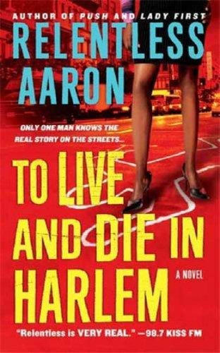

Relentless Library / Push and its sequel, To Live and Die in Harlem
Relentless Library · Sequel
Push and its sequel, To Live and Die in Harlem
The novel To Live and Die in Harlem is the documented sequel to Push. It is a book. A musical project with the same title is tracked in the Musicals section and is not this novel.

First bookPush
Sequel novelTo Live and Die in Harlem
Sequel ISBN9780312949624
Musical of same nameTracked separately; status pending verification
How the two novels connect
Push tells how Reginald “Push” Jackson is formed and sent away. The sequel, issued in a Relentless Content edition in 2005 and by St. Martin’s Paperbacks on October 2, 2007, picks him up later, trying to do legitimate renovation work in Harlem when a missing-reporter case and a wider criminal enterprise close in. You can read the sequel’s own Relentless Library pages for characters and documented plot points from the printed book.
Do not confuse the novel with the musical
Relentless has also named a musical called To Live and Die in Harlem. As of this page, a full musical album was not found in the Apple Music catalog. Soundtrack singles exist and are listed on the musical’s pages, marked “status pending verification.” This page is only about the novels.
Questions
Should I read Push first?
Yes, if you want the character’s earlier life. The sequel can be sampled on its own, but it assumes you already know who Push is.
Are the comic and the musical required?
No. They are separate projects.